*Основы работы с Midnight Commander (mc). Структура программы на
языке ассемблера NASM. > лиссом байем > ## 1 Цель работы
Приобретение практических навыков работы в Midnight Commander.
Освоение инструкций языка ассемблера mov и int. > ## 2 Теоретическое
введение > Midnight Commander (mc) — это файловый менеджер, который
позволяет просматривать структуру каталогов и выполнять основные
операции с файловой системой. Он делает работу с файлами более удобной и
наглядной. > Программа на языке ассемблера NASM, как правило, состоит
из трёх секций: секция кода программы (SECTION_text), секция
инициированных (известных во время компиляции) данных (SECTION.data) и
секция нениициализированных данных (тех, под которые во время компиляции
только отводится память, а значение присваивается в ходе выполнения
программы) (SECTION.bss). > Директивы используют mov_dst,src
Здесь операнд dst — приёмник, а src — источник. В качестве операнда
могут выступать регистры (register), ячейки памяти (memory) и
непосредственные значения (const).
Инструкция языка ассемблера intпредназначена для вызова прерывания с
указанным номером int n > ## 3 Выполнение лабораторной
работы
3.1 Основы работы с mc
Открываю Midnight Commander, введя в терминал mc (рис. 3.1).
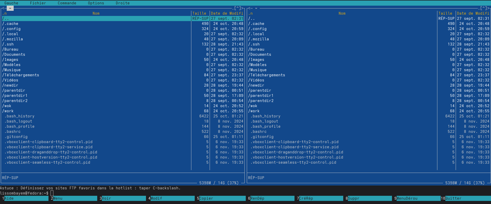
Рис. 3.1: Открытый mc
Перехожу в каталог ~/work/study/2025-2026/arch-pc, используя файловый
менеджер mc (рис. 3.2)
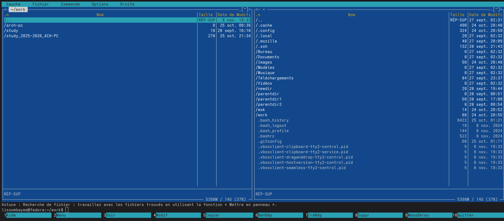
Рис. 3.2: Перемещение между
директориями
С помощью функциональной клавиши F7 создаю каталог lab05 и перехожу в
него (рис. 3.3). > 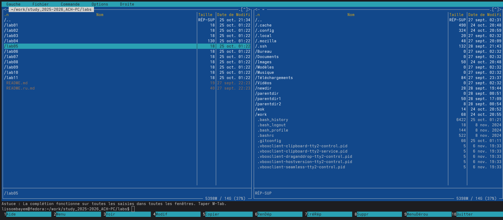
В строке ввода прописываю команду touch lab5-1.asm, чтобы создать
файл, в котором буду работать (рис. 3.4).
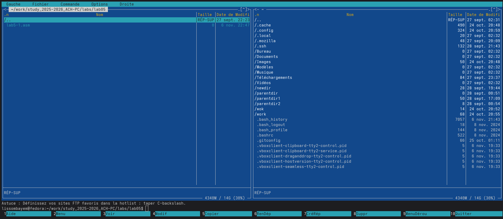
Рис. 3.4: Создание файла
3.2 Структура
программы на языке ассемблера NASM
С помощью функциональной клавиши F4 открываю созданный файл для
редактирования в редакторе (рис. 3.5).
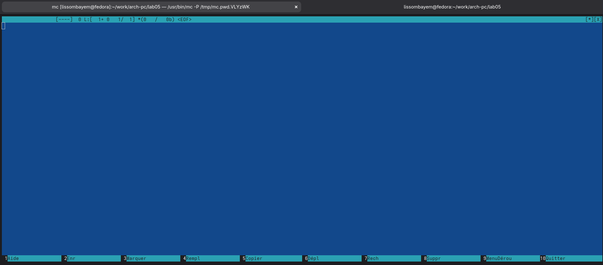
Рис. 3.5: Открытие файла для
редактирования
Ввожу в файл код программы для запроса строки у пользователя (рис.
3.6). Далее выхожу из файла (Ctrl+X), сохраняя изменения (Y, Enter).С
помощью функциональной клавиши F3 открываю файл для просмотра, чтобы
проверить, содержит ли файл текст программы
>
Транслирую текст программы файла в объектный файл командой nasm -f elf
lab5-1.asm. Создался объектный файл lab5-1.o. Выполняю компоновку
объектного файла с помощью команды ld -m elf_1386 -o lab5-1 lab5-1.o
(рис. 3.7). Создался исполняемый файл lab5-1.
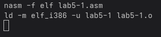
Рис. 3.7: Компиляция файла и передача на
обработку компоновщику
Запускаю исполняемый файл. Программа выводит строку “Введите строку:”
и ждет ввода с клавиатуры, я ввожу свои ФИО, на этом программа
заканчивает свою работу (рис. 3.8).
> ###
3.3 Подключение внешнего файла
Скачиваю файл in_out.asm со страницы курса в ТУИС. Он сохранился в
каталог “Загрузки” (рис. 3.9).
Рис. 3.9: Скачанный файл
С помощью функциональной клавиши F5 копирую файл in_out.asm из
каталога Загрузки в созданный каталог lab05 (рис. 3.10).
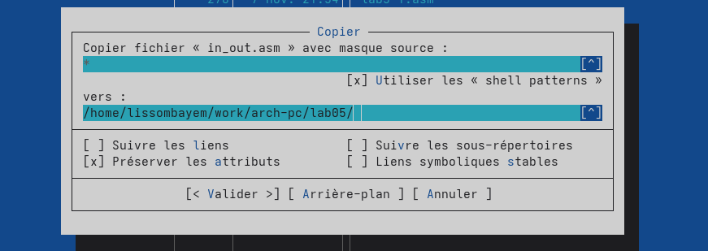
Рис. 3.10: Копирование файла
С помощью функциональной клавиши F5 копирую файл lab5-1 в тот же
каталог, но с другим именем, для этого в появившемся окне mc прописываю
имя для копии файла (рис. 3.11).
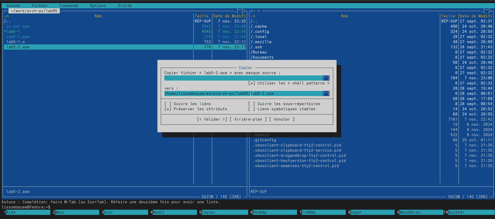 >
Изменяю содержимое файла lab5-2.asm во встроенном редакторе (рис. 4.12),
чтобы в программе использовались подпрограммы из внешнего файла
in_out.asm.
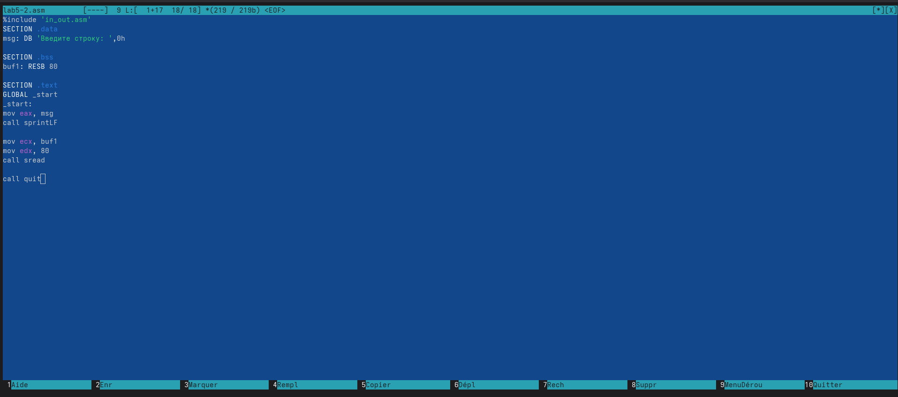
Рис. 3.12: Редактирование
файла
Транслирую текст программы файла в объектный файл командой nasm -f
elf lab5-2.asm. Создался объектный файл lab5-2.o. Выполняю компоновку
объектного файла с помощью команды ld -m elf_1386 -o lab5-2 lab5-2.o
Создался исполняемый файл lab5-2. Запускаю исполняемый файл (рис.
3.13).
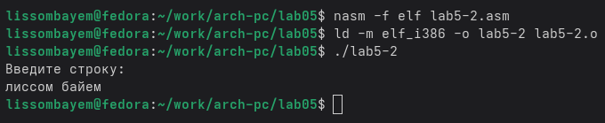
Рис. 3.13: Компиляция файла и передача на
обработку компоновщику
Открываю файл lab5-2.asm для редактирования в nano функциональной
клавишей F4. Изменяю в нем подпрограмму sprintLF на sprint. Сохраняю
изменения и открываю файл для просмотра, чтобы проверить сохранение
действий (рис. 3.14).
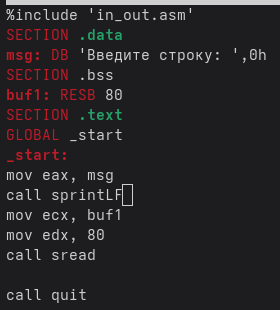
Рис. 3.14: Редактирование
файла
Снова транслирую файл, выполняю компоновку созданного объектного
файла, запускаю новый исполняемый файл (рис. 3.15). 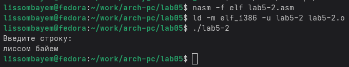
> Разница между первым исполняемым файлом и вторым в том, что запуск
первого запрашивает ввод с новой строки, а программа, которая
исполняется при запуске второго, запрашивает ввод без переноса на новую
строку, потому что в этом заключается различие между подпрограммами
sprintLF и sprint.
3.4 Выполнение
заданий для самостоятельной работы
Создаю копию файла lab5-1.asm с именем lab5-1-1.asm с помощью
функциональной клавиши F5 (рис. 3.16).
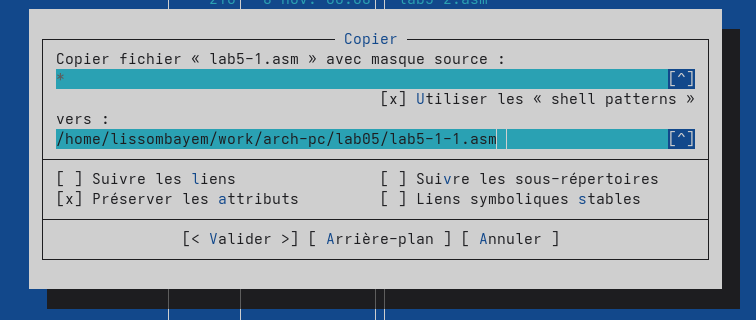
Рис. 3.16: Копирование файла
С помощью функциональной клавиши F4 открываю созданный файл для
редактирования. Изменяю программу так, чтобы кроме вывода приглашения и
запроса ввода, она выводила вводимую пользователем строку (рис. 3.17).
> > 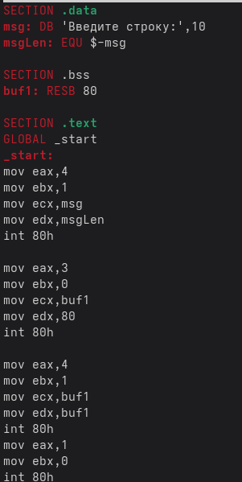
Создаю объектный файл lab5-1-1.o, отдаю его на обработку
компоновщику, получаю исполняемый файл lab5-1-1, запускаю полученный
исполняемый файл. Программа запрашивает ввод, ввожу свои ФИО, далее
программа выводит введенные мною данные (рис. 4.18).
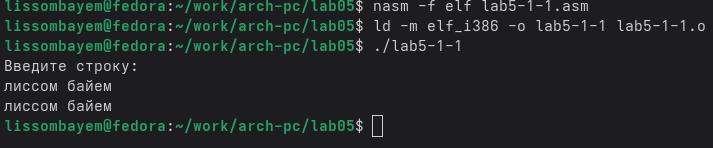
Рис. 3.18: Компиляция файла и передача на
обработку компоновщику
Код программы из пункта 1:
SECTION .data ; Секция инициированных данных
msg: DB ‘Введите строку:’,10
msgLen: EQU $-msg ; Длина переменной ‘msg’ SECTION .bss ;
Секция не инициированных данных
buf1: RESB 80 ; Буфер размером 80 байт
SECTION .text ; Код программы
GLOBAL_start ; Начало программы
start: ; Точка входа в программу mov eax,4 ; Системный вызов
для записи (sys_write)
mov ebx,1 ; Описатель файла 1 - стандартный вывод
mov ecx,msg ; Адрес строки ‘msg’ в ‘есх’
mov edx,msgLen ; Размер строки ‘msg’ в ‘edх’
int 80h ; Вызов ядра
mov eax, 3 ; Системный вызов для чтения (sys_read)
Создаю копию файла lab5-2.asm с именем lab5-2-1.asm с помощью
функциональной клавиши F5 (рис. 3.19).
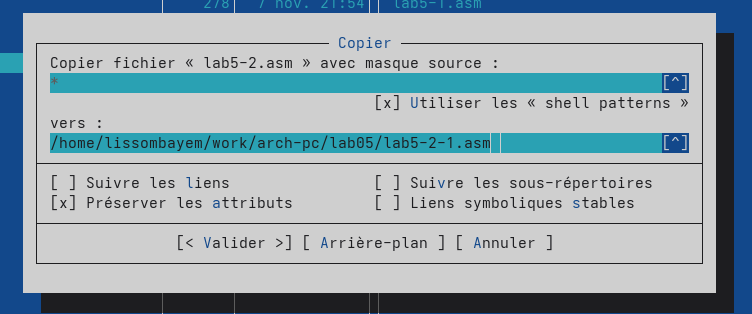
Рис. 3.19: Копирование файла
С помощью функциональной клавиши F4 открываю созданный файл для
редактирования. Изменяю программу так, чтобы кроме вывода приглашения и
запроса ввода, она выводила вводимую пользователем строку (рис. 3.20).
Рис. 3.20: Редактирую файл
Создаю объектный файл lab5-2-1.o, отдаю его на обработку
компоновщику, получаю исполняемый файл lab5-2-1, запускаю полученный
исполняемый файл. Программа запрашивает ввод без переноса на новую
строку, ввожу свои ФИО, далее программа выводит введенные мною данные
(рис. 3.21).
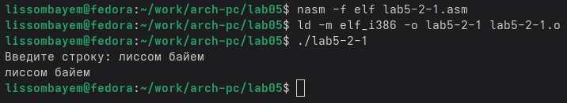
Код программы из пункта 3:
%include ‘in_out.asm’
SECTION .data ; Секция инициированных данных msg: DB
‘Введите строку:’,0h ; сообщение
SECTION .bss ; Секция не инициированных данных buf1: RESB 80
; Буфер размером 80 байт
SECTION .text ; Код программы
GLOBAL .start ; Начало программы _start: ; Точка входа в
программу
mov eax, msg ; запись адреса выводимого сообщения в EAX
call sprint ; вызов подпрограммы печати сообщения
mov ecx, buf1 ; запись адреса переменной в EAX
mov edx, 80 ; запись длины вводимого сообщения в EBX
call sread ; вызов подпрограммы ввода сообщения
mov eax,4 ; Системный вызов для записи (sys_write) mov
ebx,1 ; Описатель файла ‘1’ - стандартный вывод
mov ecx,buf1 ; Адрес строки buf1 в еса
int 80h ; Вызов ядра
call quit ; вызов подпрограммы завершения ## 4 Выводы
При выполнении данной лабораторной работы я приобрела практические
навыки работы в Midnight Commander, а также освоила инструкции языка
ассемблера mov и int.
 >
Транслирую текст программы файла в объектный файл командой nasm -f elf
lab5-1.asm. Создался объектный файл lab5-1.o. Выполняю компоновку
объектного файла с помощью команды ld -m elf_1386 -o lab5-1 lab5-1.o
(рис. 3.7). Создался исполняемый файл lab5-1.
>
Транслирую текст программы файла в объектный файл командой nasm -f elf
lab5-1.asm. Создался объектный файл lab5-1.o. Выполняю компоновку
объектного файла с помощью команды ld -m elf_1386 -o lab5-1 lab5-1.o
(рис. 3.7). Создался исполняемый файл lab5-1. > ###
3.3 Подключение внешнего файла
> ###
3.3 Подключение внешнего файла{kind=link}